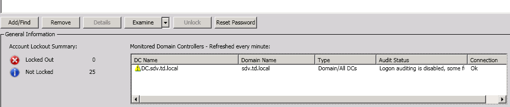
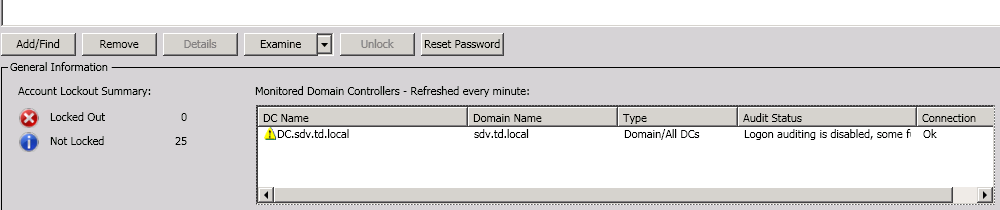
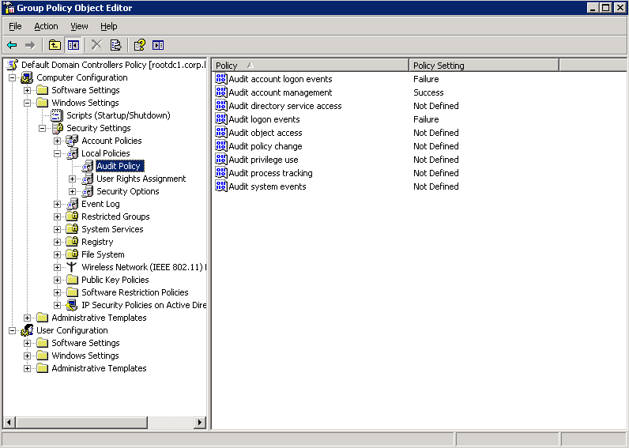

Audit status of some Domain controllers in the list shows that some auditing is disabled,
for example "Logon Auditing is disabled, some funcionality will be unavailable for this DC.
Please turn on auditing of invalid logons in audit policy for this DC"

This message can occur if audit policies in your domain are not set. In this case product will not work because no lockout events will be present. But the message can also occur even if correct audit policy is set in your domain. It can happen because in Windows XP/2003/Vista/2008 Account Lockout Examiner checks only if 3 policies under Local policy - Audit policies node of Group policy are configured, but in Windows 7/2008R2 Account Lockout Examiner checks if Advanced Audit Policies are configured, so you might get such warning even if default 3 Audit policies are set, but advanced are not. .
To resolve the issue configure audit policies/ advanced audit policies. For Windows 2003/2008 domain:

This message can occur if audit policies in your domain are not set. In this case product will not work because no lockout events will be present. But the message can also occur even if correct audit policy is set in your domain. It can happen because in Windows XP/2003/Vista/2008 Account Lockout Examiner checks only if 3 policies under Local policy - Audit policies node of Group policy are configured, but in Windows 7/2008R2 Account Lockout Examiner checks if Advanced Audit Policies are configured, so you might get such warning even if default 3 Audit policies are set, but advanced are not. .
To resolve the issue configure audit policies/ advanced audit policies. For Windows 2003/2008 domain:
- On any DC, launch the Group Policy Management console.
- Right-click the appropriate Group Policy Object linked to the Domain Controllers container and select Edit.
- Expand the Computer Configuration -> Windows Setting -> Security Settings -> Local Policies -> Audit Policy node.
- Configure audit policies as follows:
- Account Management: Success
- Audit account logon events: Failure
- Audit logon events: Failure

- Update group policy an all monitored DCs (for example run gpupdate /force)
- On any DC, launch the Group Policy Management console.
- Right-click the appropriate Group Policy Object linked to the Domain Controllers container and select Edit.
- Expand the Computer Configuration -> Policies -> Windows Settings -> Security Settings -> Advanced Audit Policy Configuration node.
- Configure audit policies according to page Page 12, Section 4.2: Enabling Audit Policy, of the Account Lockout Examiner Administrator Guide.
- Update group policy an all monitored DCs (for example run gpupdate /force)
- Run Registry Editor (Start - Run - regedit)
- Navigate to HKEY_LOCAL_MACHINESoftware[Wow6432Node]NetWrixAccount Lockout Examiner (Wow6432Node is present only in 64-bit OS)
- Change the value of UseWMI_Audit to 0,
- In the Account Lockout Examiner console go to File - Settings and click OK to apply registry changes.